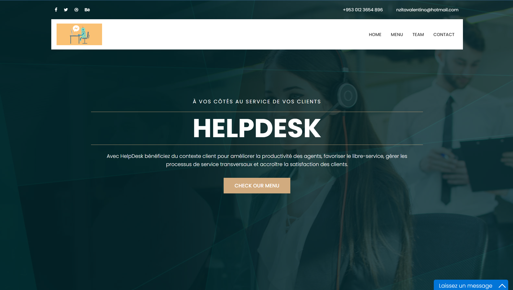
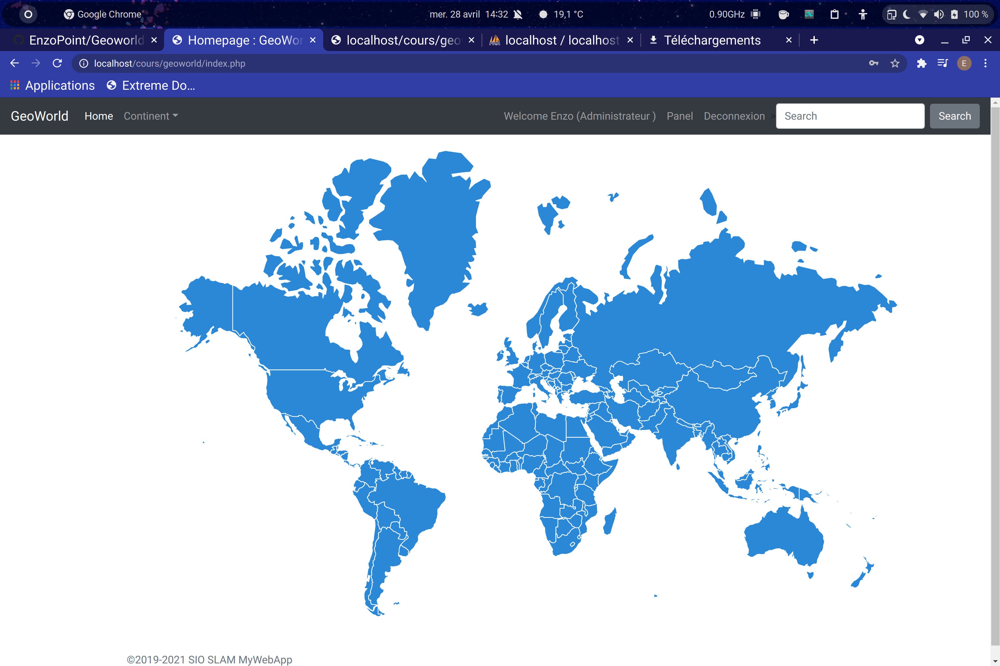
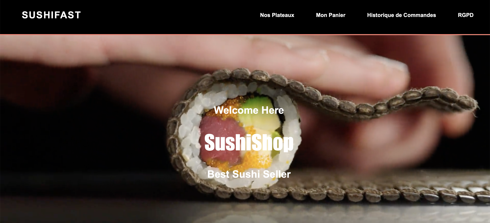

Helpdesk (HTML, CSS)
Site vitrine pour mon entreprise (stage de première années).
Découvrez le projet

Géoworld (PHP)
Site avec une carte interactive permettant de connaitre des informations concernant certains Pays / Ville
Découvrez le projetGuess (PHP)
Jeu de carte interactive avec TestUnitaire "Tu prends une carte et tu mélanges"
Découvrez le projet

Sushi Fast (HTML, JS, CSS)
Clone du site Officiel Sushi Fast avec intégration de notre propre API
Découvrez le projet